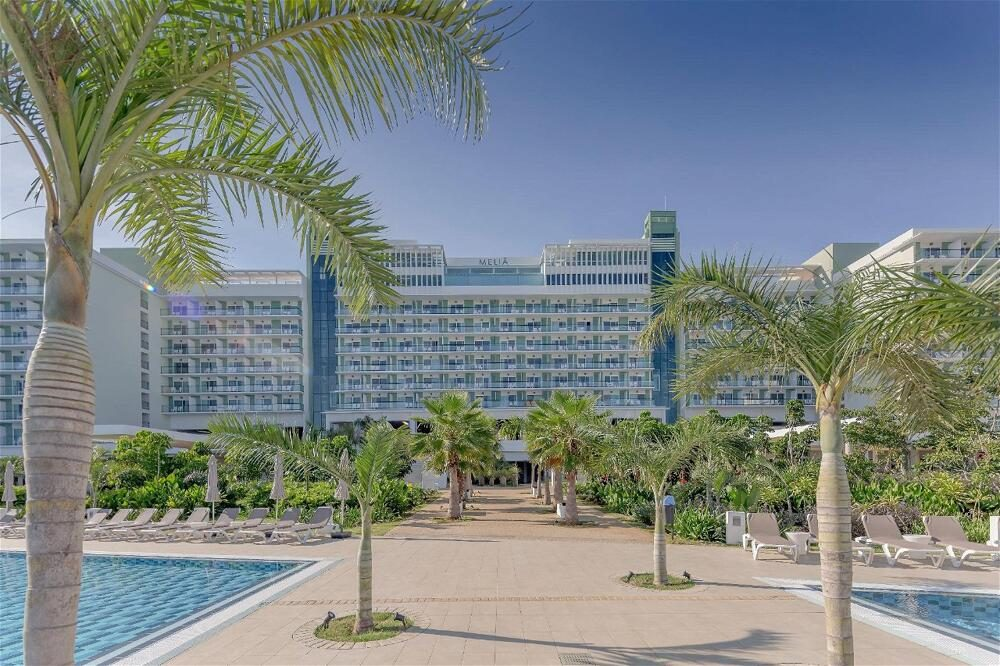
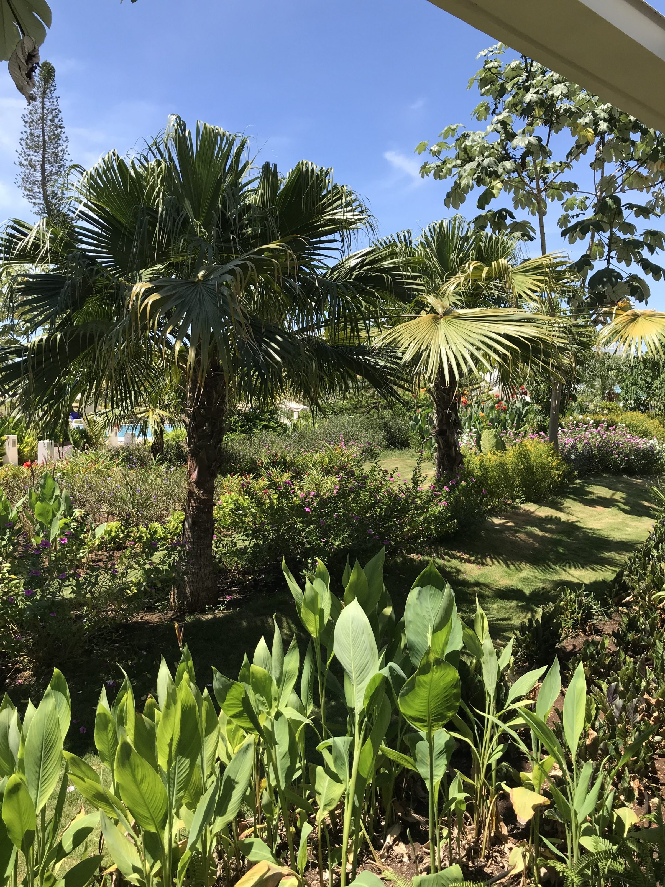
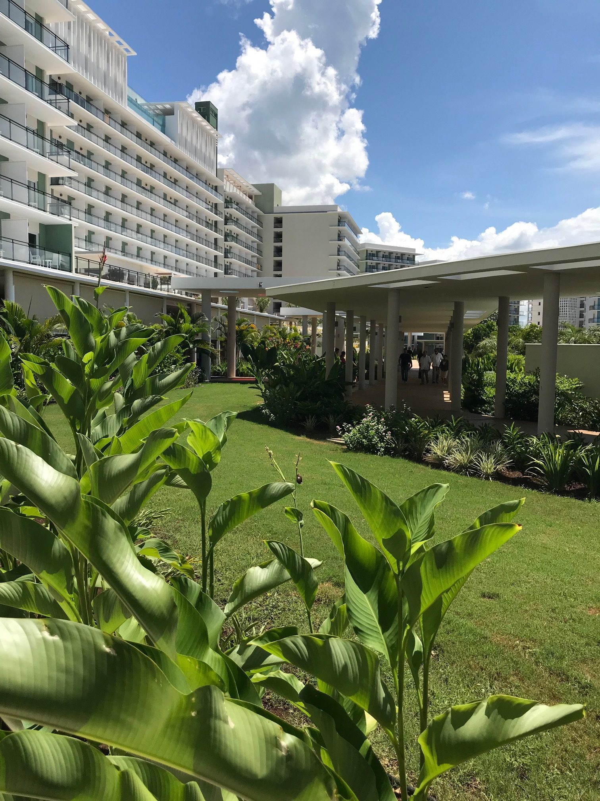
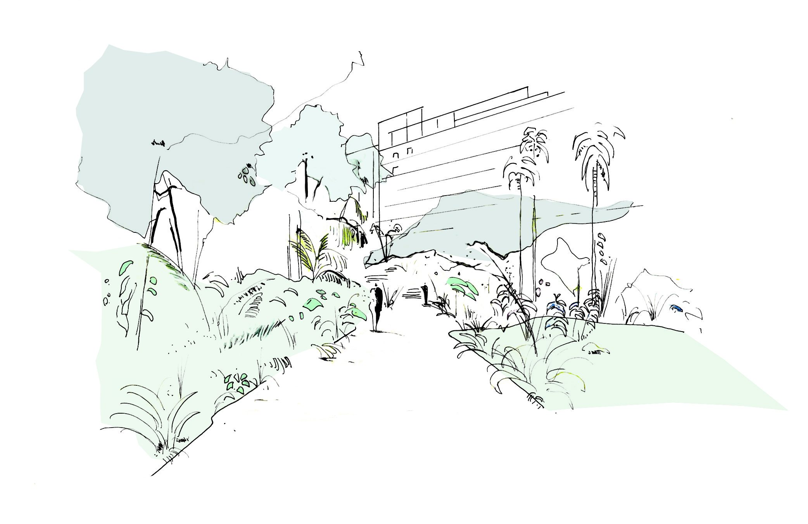
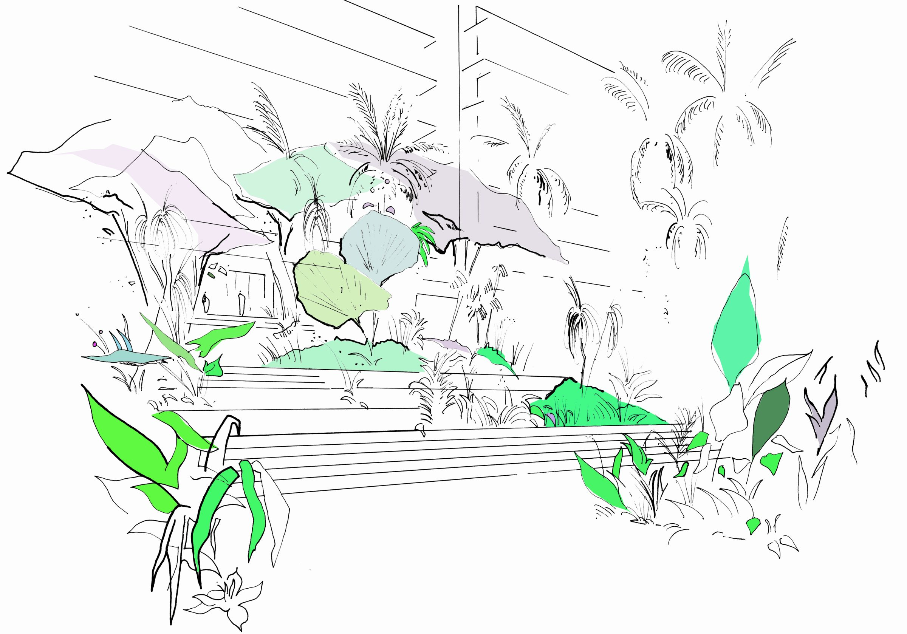
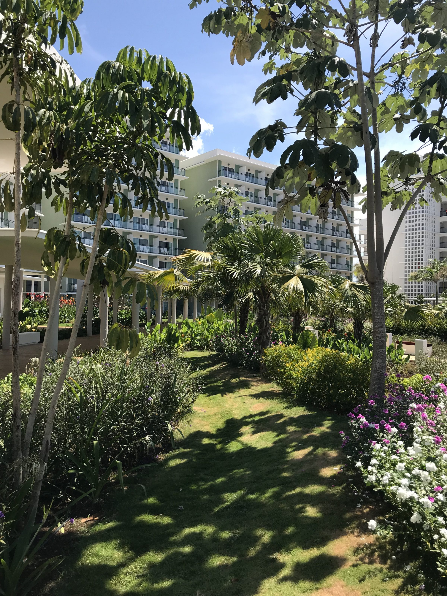
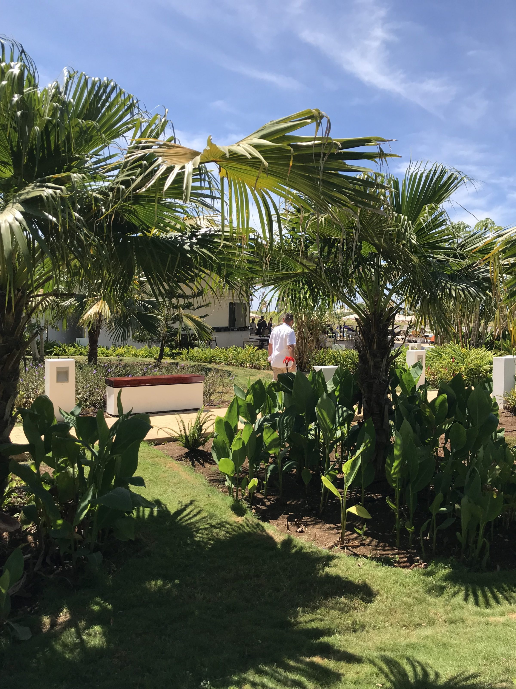
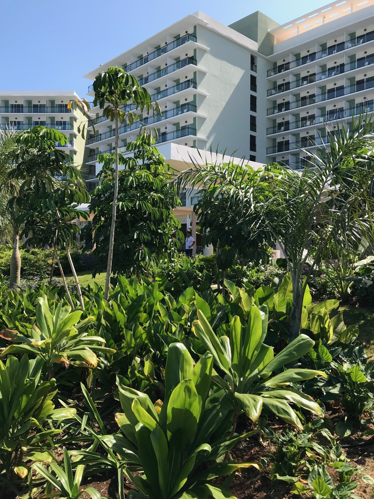
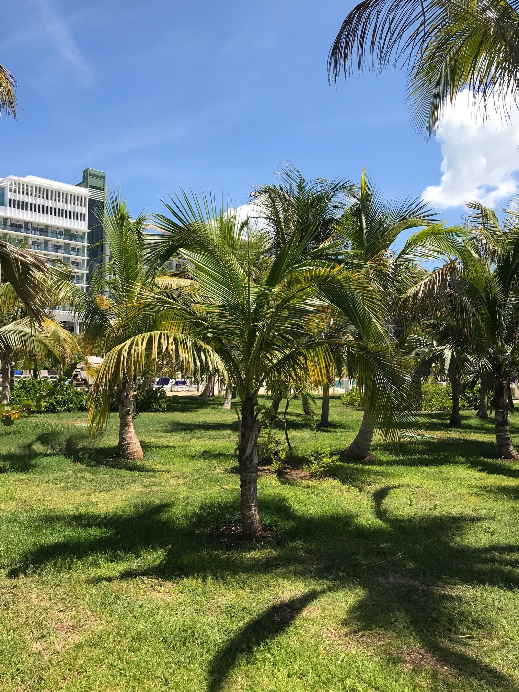

Le jardin de l'hôtel Meliá Internacional s'étend sur six hectares, enveloppant un bâtiment imposant dans un foisonnement végétal. Conçu comme un véritable jardin botanique, il offre aux visiteurs une immersion dans la diversité tropicale, révélant l'identité du site à travers la richesse de ses essences. Les tracés organiques et les chemins en creux invitent à une promenade au cœur d'une végétation stratifiée, où couvre-sols, arbustes, palmiers et grands arbres s'entrelacent.
Une large partie du jardin se déploie entre le bâtiment et la mer, où la piscine se fond dans ce paysage tropical luxuriant. On y découvre des espèces emblématiques telles que les héliconias, dracénas, alocasias, alpinias, monsteras, aralias, cannes à sucre, Cycas revoluta et frangipaniers, complétées de liriopes et de spathiphyllums en couvre-sol.
Palmiers royaux, Washingtonia robusta, cocotiers, Beaucarnea recurvata et palmiers de Santa Lucia se mêlent aux Schefflera, Cordia sebestena et Plumeria, composant une canopée dense et une profusion végétale tropicale en bord de mer.







